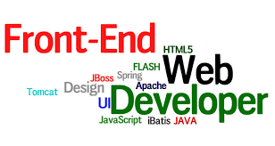
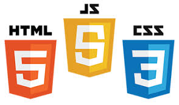

View Portfolio 
-


Hi! My name is Banesa Guaderrama. I am a volunteer teacher, corporate trainer, developer, lead auditor, and quality management systems specialist currently living in Atlanta, GA.
I hold a Bachelor of Industrial Engineering in quality and productivity, a Bachelor of Science in Accounting, a Masters of Business Administration (MBA), and currently pursuing a Doctoral program in management and innovation. I teach at Centro Hispano Marista (at Marist High School) Language Arts in Spanish as a volunteer Lead Teacher. I have over twelve years of leadership and management experience, including problem-solving, process mapping, and regulatory compliance. I am fluent in English and Spanish.